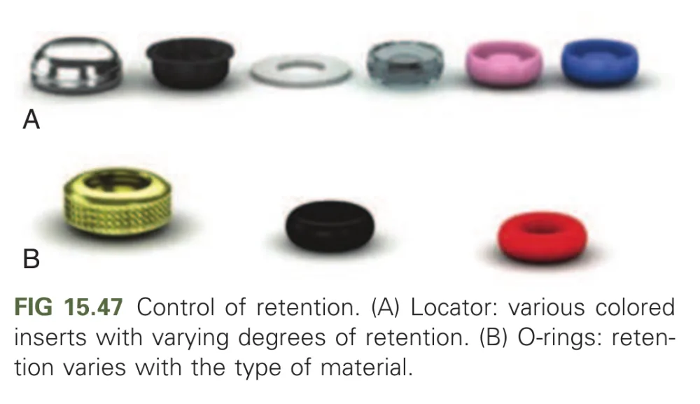
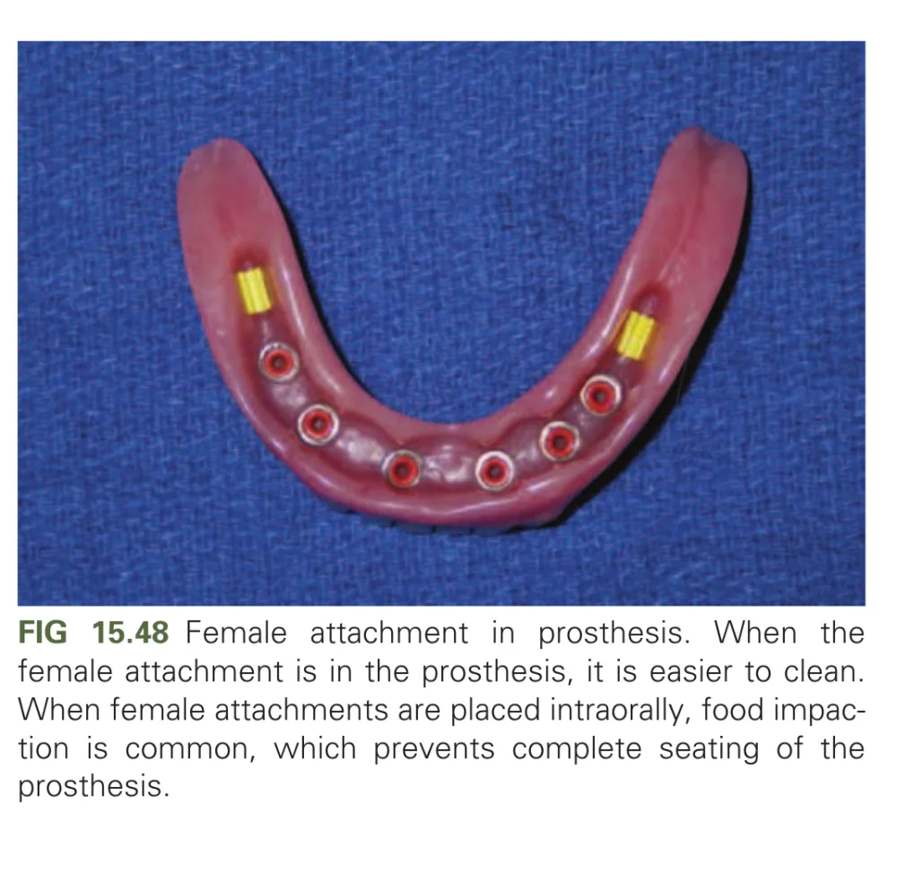

نسخه استخراجشده؛ ترجمه یا تأیید علمی انجام نشده است. وضعیت: captured
نخست، دو عدد که مرز «گیر کافی» را مشخص میکنند:
و یک اصطلاح که باید دقیق بشناسی — peak load: «حداکثر نیرویی که پیش از جدا شدن کامل اجزای اتچمنت از اباتمنتهای ایمپلنت ایجاد میشود.»
و بر پایهی peak load، سیستمهای اتچمنت در چهار گروه طبقهبندی شدهاند:
به گروه چهارم دقت کن: هر سه عضو آن مگنتاند. یعنی از دید نیروی گیر، اتچمنتهای مغناطیسی در پایینترین ردهی این طبقهبندی مینشینند.
و دادههای مقایسهای:
و جمعبندی دربارهی اتچمنت ایدهآل:
«در دندانپزشکی ایمپلنت امروز، دو سیستم اتچمنت رایجتر برای استفاده، سیستم لوکیتور و سیستم اتچمنت O-ring هستند.» و پنج مزیت مشترکشان:
و در پایان: «هر دو این اتچمنتها میتوانند مستقل به کار روند یا از طریق پروتکلهای cast-to یا سمانی به یک بار متصل و در آن گنجانده شوند.»
و یک قاعدهی عملی برای تنظیم گیر: «گیر کافی باید پیش از جاگذاری نهایی پروتز حاصل شود.» و افزایش تدریجی توان گیر را میتوان بعداً با جایگزین کردن جزء درون انکپسولاتور با اتچمنتی گیرندهتر بهدست آورد. اگر بعدها گیر بیشتری لازم شود، یک المان سفتتر که همان انکپسولاتور نگهش میدارد، مسئله را بهسادگی حل میکند.
و چرا این مهم است: گیر ناکافی به حرکت و احتمال شل شدن پیچ میانجامد. پس گیر یک تنظیم است، نه یک ویژگی ثابت — و انکپسولاتور همان چیزی است که آن را قابل تنظیم نگه میدارد.

نخست یک قاعدهی جانمایی که هم بهداشتی است و هم کارکردی:
«بیشتر اتچمنتهایی که امروز در دندانپزشکی ایمپلنت به کار میروند، جزء نر را در حفرهی دهان و جزء ماده را در پروتز دارند.»
و منطقش: «جزء نر را میتوان آسانتر در دهان تمیز کرد، و جزء دشوارتر — یعنی ماده — میتواند با دید مستقیم و دسترسی از بیرون دهان (یعنی درون پروتز) تمیز شود.»
و اگر برعکس شود؟ «وقتی جزء ماده بخشی از ایمپلنت یا بار متصلکننده باشد، اگر هر مقدار پلاک یا غذایی درون آن جمع شود، اوردنچر کاملاً نمینشیند.» و نتیجه: ناهماهنگیهای اکلوزالی، نبود گیر، و احتمال تحت فشار قرار گرفتن بافت — که به ناامیدی بیمار میانجامد.
به الگو دقت کن: یک تصمیم ظاهراً بهداشتی (کدام جزء کجا باشد)، در عمل نشستن کامل پروتز را تعیین میکند — و از آنجا اکلوژن را. عوارض اوردنچر بارها از یک تصمیم کوچک به یک پیامد بزرگ زنجیر میشوند.
و اکنون عارضهی اصلی اتچمنتها — که اجتنابناپذیر است:
«عارضهی اصلی اتچمنتهای ایمپلنت در طول زمان، از دست رفتن گیر است.» و توضیح میدهد: «تغییرات ساختاری ناشی از فرسایش که در هر سیستم اتچمنتی ذاتی است، ناگزیر به کاهش یا از دست رفتن کامل گیر خواهد انجامید.»
و تعریف فرسایش (wear): «کنش مکانیکی بهتنهایی، یا ترکیبی از کنشهای شیمیایی و مکانیکی، از دست رفتن ماده از سطح را القا میکند.» و فرسایش نشان داده شده که گیر اتچمنت را کاهش میدهد، به زوال و تغییر شکل و کارسختی (work hardening) میانجامد، و میتواند به شکست اتچمنت هم برسد.
و دو نوع فرسایش که باید از هم تفکیک شوند:
یکم — فرسایش جویدنی (mastication wear). «فرسایش اتچمنت از نیروهای اکلوزالی بسیار متفاوت از چرخههای جاگذاری-برداشتن است.»
و نقش بافت زیر پروتز: در بیشتر اوردنچرها (RP-5)، «مقدار بار اکلوزالی واردشده بر اتچمنت را ارتجاعیت بافت دیکته میکند.» مقدار جابهجایی موکوزا بر حرکت دنچر و نیروی رسیده به اتچمنت اثر میگذارد — پس در RP-5، رفتار بافت نرم بخشی از معادلهی فرسایش اتچمنت است.
و عددش: مطالعاتی که جویدن را شبیهسازی کردند نشان دادند گیر اتچمنت لوکیتور با یک منحنی نزولی غیرخطی، ۴۰ درصد کاهش مییابد. «این با مسائل نگهداری که مستقیماً به نیروهای جویدنی مربوطاند همخوانی دارد.» و در همان مطالعه، برای اتچمنتهای نوع بال تنها تغییرات جزئی یافت شد.
دوم — فرسایش جاگذاری-برداشتن (insertion-removal wear).
اما نتیجهگیری پژوهشگران، انتخاب اتچمنت را در جایگاه دوم میگذارد: «موازی بودن ایمپلنتها اثر بیشتری بر عوارضی که رخ میدهند دارد تا انتخاب یا نوع اتچمنتها.» — یعنی همان الزام موازی بودن که در یونیت پیش برای OD-1 خواندی، اینجا با شواهد فرسایش تأیید میشود.
و مقیاس زمانی واقعی، از آزمونهای جاگذاری-برداشتن: سیستمهای اتچمنت در معرض نیروهای محوری یا پارااگزیال در دامنهی ۵۴۰ تا ۱۰٬۰۰۰ چرخه از جاگذاری و برداشتن مکرر قرار گرفتند. این نمایندهی ۶ ماه تا ۹ سال عملکرد بالینی است، بر پایهی سه بار برداشتن و جاگذاری روزانه برای بهداشت. نتیجه: «یک روند مشترک بهسوی کاهش یا از دست رفتن کامل نیروی گیر در اکثریت سیستمهای اتچمنت یافت شد.»
و عدد اتچمنتهای بال-سوکت، الگوی زمانی را نشان میدهد: «از دست رفتن گیر پس از چرخههای مکرر جاگذاری-برداشتن تدریجی و پیوسته است. این کاهش میتواند پس از تقریباً ۵۰۰ چرخه ناگهانی باشد و پس از ۲۰۰۰ چرخه به ۸۰ درصد مقدار اولیه برسد.» — یعنی افت گیر خطی نیست: یک سقوط زودهنگام دارد و بعد ادامه مییابد.
و یک هشدار عملی هنگام پیکاپ مستقیم اتچمنت: «باید دقت شود که نیروی بیش از حد بر دنچر وارد نشود (یعنی نیروی جابهجاکننده). هر بار نصبِ بزرگتر از صفر نیوتن، یک نیروی حاصل بر پروتز/ایمپلنت خواهد داشت.»
پس جمعبندی این یونیت: از دست رفتن گیر یک شکست نیست، یک ویژگی زمانمند است. کار پزشک حذف آن نیست — کار پزشک این است که سیستمی انتخاب کند که بتوان اجزایش را ارزان و آسان تعویض کرد، و بیمار را از پیش برای جلسات نگهداری آماده کند. و همین ما را به همان جملهی درس اول برمیگرداند: نخستین و آخرین عارضه، یک گفتوگوی انجامنشده است.
